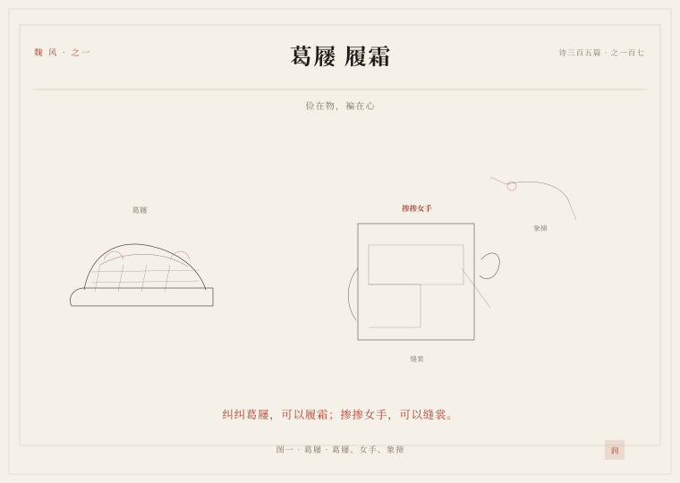
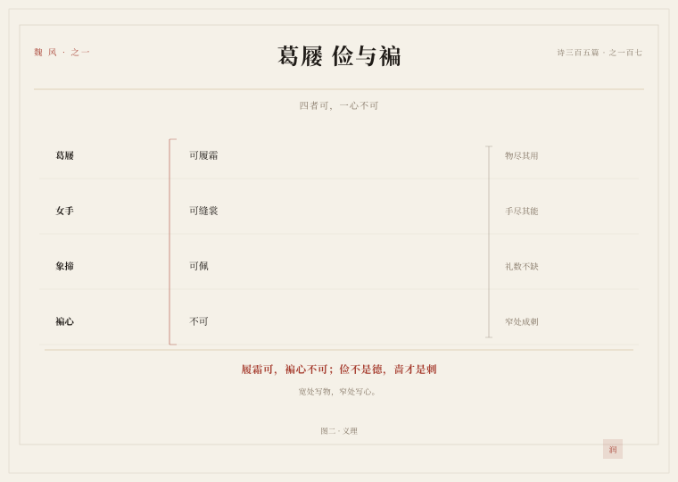

第一百七篇 葛屦
魏风 · 之一 SJ107
朗读 · 普通话
依经文原文朗读，章次不读出；配古琴底乐，不改速、不加拖腔。全库同一音色（豆包 TTS），非播音员录制。
一 解题
诗三判：
- 谁在说：魏人。看见缝裳之女以纤手做衣、贵人服之，而贵人只知自守，遂以“褊心”作刺。
- 说什么事：一章写“做”——葛屦履霜、女手缝裳、要之襋之；二章写“穿”——好人提提、左辟、佩象揥；末句一转，落在“褊心”。
- 为何编在此：魏风之首。齐风终于“美中缺”，魏风起于“俭而褊”。
一国之风，先看它怎样待物、怎样待人。
《毛序》：“《葛屦》，刺褊也。魏地陿隘，其民机巧趋利，其君俭啬褊急，而无德以将之。”
朱子《诗集传》：“赋也。魏地狭隘，民俗俭啬，其君又俭啬而褊急，故诗人刺之。纠纠，缭戾也。掺掺，犹纤纤也。要，裳要；襋，衣领也。好人，谓其君也。提提，安舒之意。宛然，让之貌也。左辟，谓辟之也。象揥，所以摘发者也。褊，狭也。”
本库的看法：《葛屦》是一首把“俭”写成“褊”的诗。
葛屦可以履霜，女手可以缝裳，物尽其用，手尽其能；好人提提、左辟、佩揥，礼数也不缺。缺在“褊心”——只知省，不知宽；只知守，不知与。
断语：履霜可，褊心不可；俭不是德，啬才是刺。
先辨五事：“葛屦”是葛编的夏鞋，不是冬靴；“掺掺”是纤纤女手，不是“掺和”；“要之襋之”是裳腰与衣领，不是“要挟”；“好人”指贵人、夫婿，不是“好人坏人”；“象揥”是摘发之簪，不是象牙梳。
二 经文
第一章
纠纠葛屦，可以履霜。
掺掺女手，可以缝裳。
要之襋之，好人服之。
第二章
好人提提，宛然左辟，佩其象揥。
维是褊心，是以为刺。
分章：二章，一章六句，一章五句。
三 韵读
- 一章：霜、裳，阳部；之，之部，换韵。霜—裳—之，由外而内，由物而人。
- 二章：提、辟、揥、刺，支部转至部；四字短促，收在“刺”。
读法：一章韵宽，二章韵紧；宽处写物，紧处写心。
四 字义与名物
- 纠纠：缭戾缠绕之貌；葛屦编绳纠结。葛屦：葛草编的鞋，夏履，贱物。
- 履霜：踩霜；霜降而鞋薄，见其俭。掺掺：纤纤，细手。
- 缝裳：缝制衣裳。要：裳腰；襋：衣领。要之襋之：缝好腰、领。
- 好人：贵人、夫婿；服之：穿它。
- 提提：安舒之貌。宛然：宛转退让之貌。左辟：向左避让。
- 象揥：象牙制的摘发簪；佩：佩在身边。
- 褊心：狭急之心；刺：讥刺。
五 今译
葛绳纠纠的凉鞋，可以踩着霜走。纤纤的女手，可以缝衣裳。缝好腰、缝好领，贵人穿上它。
贵人安安舒舒，宛然向左避让，佩着象牙发簪。只是这颗心太窄，所以才作诗刺他。
六 章旨
- 一章：写“物尽其用”。葛屦履霜、女手缝裳、要襋而成衣；俭在物上，巧在手上。
- 二章：写“人失其宽”。提提、左辟、佩揥，礼仪不缺；缺在褊心。
- 总收：俭可立身，褊必失人。
诗不刺穷，刺“窄”。
七 诗教
- 兴：由葛屦、女手起，兴到“好人”之服；物之俭，照见心之褊。
- 观：观一国之风。君俭而褊，民机巧趋利；俭啬不是德，是失宽。
- 群：缝者与穿者相对；一衣之上，见上下之分。
- 怨：诗有刺而无怒；怨在“是以为刺”四字，轻声而冷。
八 分寸与边界
- 不可把“葛屦”当冬靴。它是夏履；一读冬靴，履霜就不成俭。
- 不可把“掺掺”当掺和。它是纤手；一读掺和，缝裳就成杂作。
- 不可把“好人”当道德好人。它指贵人；一读好人，全诗就成劝善。
- 不可把“左辟”当逃跑。它是让路；一读逃跑，礼数就崩。
- 不可把诗读成赞美俭朴。末句明说“褊心”；一读赞美，毛序就落空。
九 存疑
- 诗旨：毛序“刺褊”；朱子“民俗俭啬，其君又俭啬而褊急”。本库从“俭而褊”读。
- “好人”：毛传“好人，谓其君也”；一说指夫婿。从毛传，才与“服之”“左辟”合。
- “要之襋之”：毛传“要，襋也”；一说“要”为腰，“襋”为领。从腰领分读。
- “象揥”：毛传“所以摘发也”；一说“象骨搔头”。从摘发之簪。
- “维是褊心”：指君心窄，还是指诗人自谓？从君心窄，才与“刺”合。
十 跨典
- 《论语·述而》：“奢则不孙，俭则固。与其不孙也，宁固。”——俭而固，正是“褊”的边界。
- 《左传·庄公二十四年》：“俭，德之共也；侈，恶之大也。”——俭本为德；此诗刺的是俭过而成褊。
- 《礼记·檀弓》：“昔者夫子居于宋，见桓司马自为石椁，三年而不成。”——奢之害；与此诗对读，奢俭两端，皆失其中。
- 《诗经·魏风·汾沮洳》：“美无度，殊异乎公路。”——同卷另一首；107
刺褊，108 刺美不在位。
十一 双卡与图
双卡八对：
| 葛屦（夏履） |
葛屦（冬靴） |
| 掺掺（纤手） |
掺掺（掺和） |
| 要（裳腰） |
要（要挟） |
| 襋（衣领） |
襋（衣襟泛称） |
| 好人（贵人） |
好人（道德好人） |
| 左辟（让路） |
左辟（逃跑） |
| 象揥（摘发簪） |
象揥（象牙梳） |
| 褊心（狭急） |
褊心（俭朴） |

图一 · 葛屦 葛屦、女手、象揥

图二 · 葛屦 俭与褊
读图三处：
- 葛屦：只画一只葛编凉鞋，绳纹纠缠，鞋底薄；不画脚，不画霜地。
- 女手：只画一双手与针线，衣身半成；手不画脸，衣不画全。
- “褊”在末格：图二上排“葛屦/女手/象揥”三件皆可用，下排“褊心”一格窄而红；窄一格，全诗就成立。